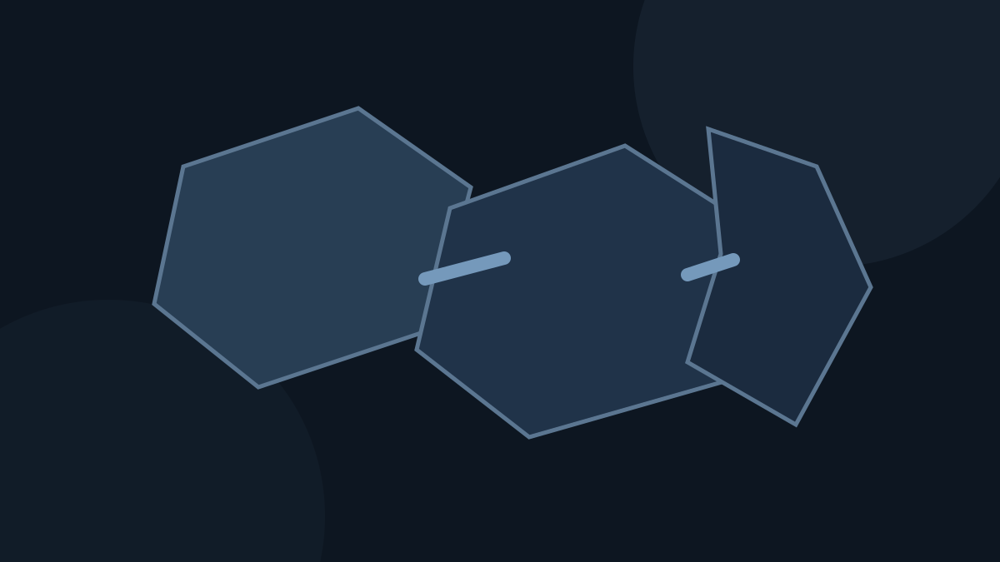

GTA 3 Liberty City Map Guide: Portland, Staunton Island and Shoreside Vale

Liberty City is structured around three major playable districts that open as the story progresses.
Liberty City in GTA III is compact compared with later Grand Theft Auto maps, but its three-island structure creates a strong sense of progression. Learning how Portland, Staunton Island and Shoreside Vale connect makes missions, collectibles, import/export work and 100% completion much easier.
Portland: the opening island
Portland is the industrial and older urban side of Liberty City. It contains docks, Chinatown, Trenton, Red Light District, Saint Mark's, Harwood and other early-game areas. The road network is dense and several gang territories become more dangerous as the story changes relationships.
Because later hostility can make exploration harder, Portland collectibles and side activities are often more comfortable when completed early.
Staunton Island: the central business district
Staunton Island shifts the visual language toward offices, parks, construction zones and denser commercial streets. It becomes a major hub for mid-game missions and offers easier access to faster civilian cars than the early Portland streets.
The island also acts as the geographic middle of the three-district map, so knowing bridge/tunnel routes helps when moving between long side-objective chains.
Shoreside Vale: suburbs, airport and late-game roads
Shoreside Vale combines suburban neighborhoods, hilly roads, industrial zones and Francis International Airport. The terrain is less grid-like than central Staunton and can take longer to learn because elevation and winding roads break direct sight lines.
Late-game mission traffic and long drives make route familiarity especially useful here. The Dodo aircraft also appears at the airport, although flying it is intentionally difficult.
How the islands unlock
GTA III uses story progression to open access between districts. Rather than giving the whole city immediately, the game turns new bridges/routes into rewards for advancing the main storyline.
This structure is important for completion planning: some vehicle lists, collectibles and side objectives are technically visible in your checklist before every required location or vehicle is conveniently accessible.

Portland, Staunton Island and Shoreside Vale each have distinct road layouts, gangs and mission patterns.
Safehouses and navigation strategy
Each main district has a safehouse area that acts as a practical reset point. Hidden-package milestone rewards can place weapons or items at safehouses, making collectible progress useful beyond the completion percentage.
When learning the map, build mental routes between the safehouse, mission-giver areas, Pay 'n' Spray locations and major bridges. Those routes matter more during high wanted levels than memorizing every small alley.
Collectibles across Liberty City
GTA III contains 100 hidden packages and 20 unique jumps spread around the city, plus rampages and vehicle-based objectives. A district-by-district approach reduces backtracking and helps avoid mixing missed items across all three islands.
For hidden packages, see our 100 hidden packages guide. For stunt jumps, use the unique jumps guide.
Map knowledge for 100% completion
Import/export lists require vehicles from different parts of the city, rampages have multiple possible start points, and emergency-service missions become easier or harder depending on road familiarity. The map is therefore a completion tool, not just scenery.
Before a full 100% run, learn one island at a time and finish location-heavy side content while its streets are still familiar.
Browser map performance tips
Dense city areas can create more visible geometry and traffic than quieter roads. If a low-end device stutters in busy districts, lower the FPS cap rather than repeatedly clearing the game cache. The OPFS archive has no reason to change simply because one area is more demanding to render.
Play GTA III in your browser
Use the GTA III Browser launcher for the WebAssembly runtime and one-time OPFS archive cache.
▶ Play GTA III